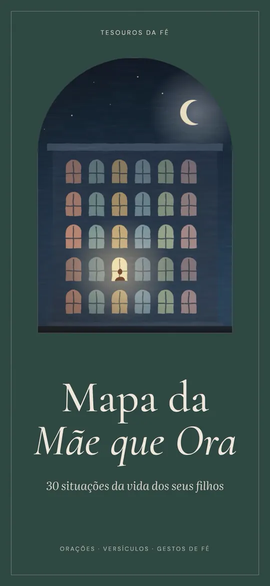
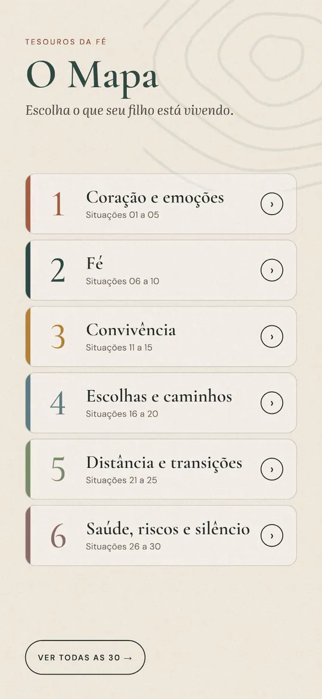
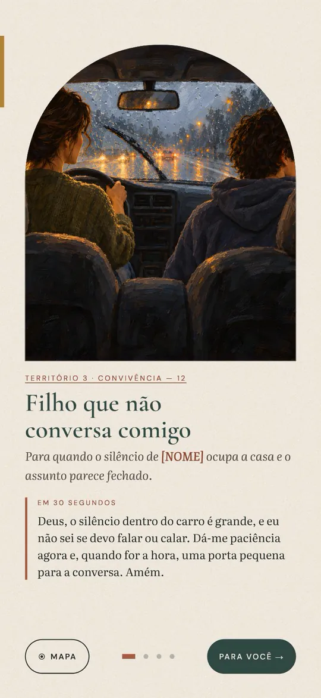
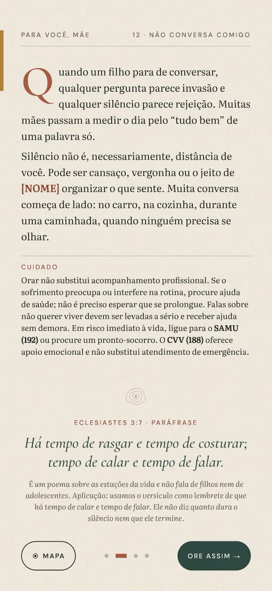
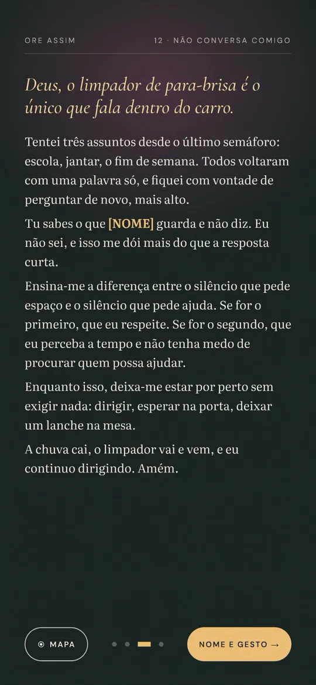
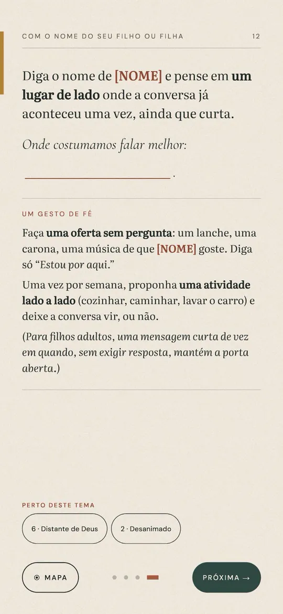
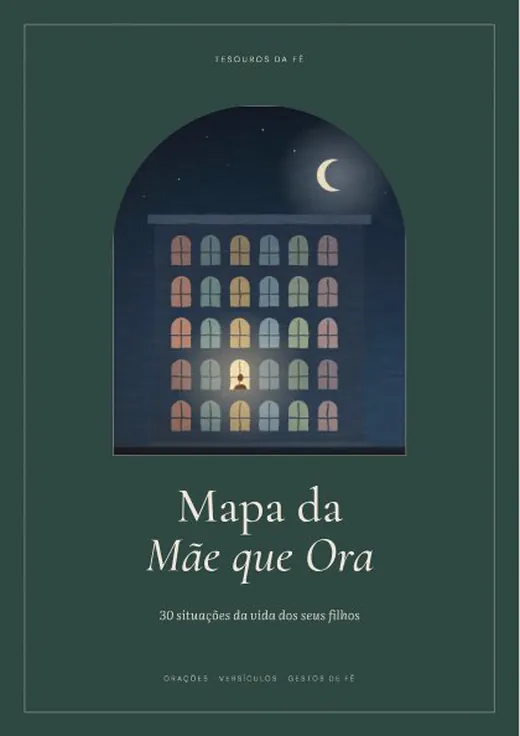
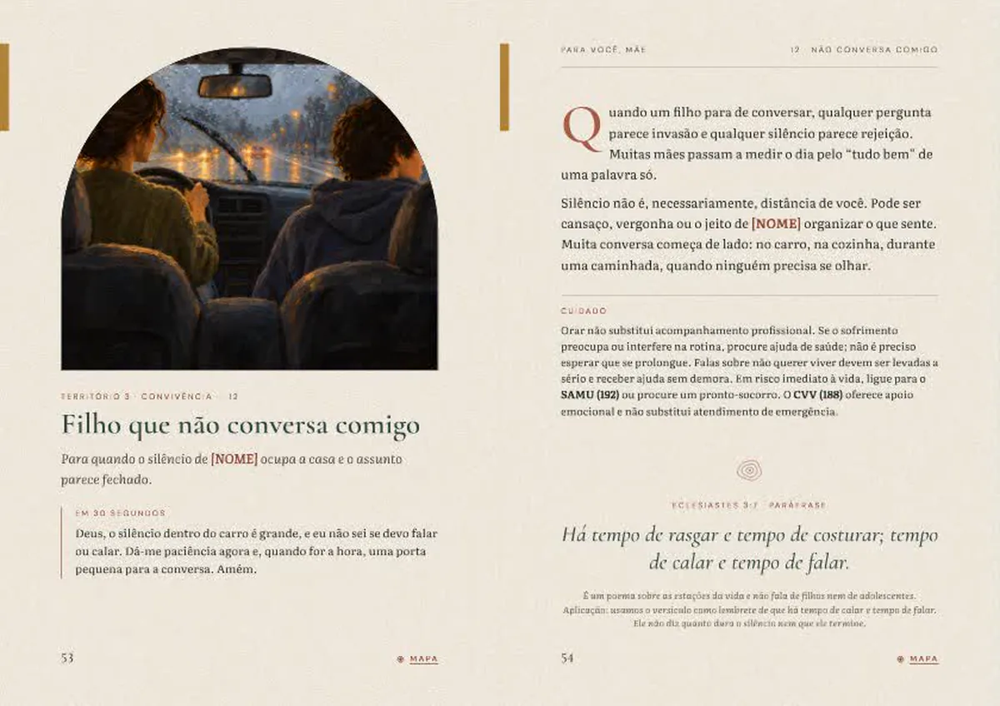

Escolha a situação do seu filho. Encontre a oração.
Um guia de oração em PDF com 30 situações da vida dos filhos. Cada uma traz uma oração de 30 segundos, a oração completa, um versículo em paráfrase e um gesto de fé.
Quero o Mapa — R$ 29,90PDF · compra única · garantia de 7 dias
Sem ordem, sem dias para cumprir.
Escolha o que seu filho está vivendo.
Toque na situação no Mapa. No livro impresso, use o número da página.
Encontre uma oração para aquela situação.
Com o dia corrido, 30 segundos. Com mais tempo, a reflexão e a oração completa.
Ore e dê um pequeno passo.
Se fizer sentido hoje, faça o gesto de fé. Volte ao Mapa quando a situação mudar.
30 situações, em 6 territórios.
Você não precisa saber por onde começar. Procure o que seu filho está vivendo e vá direto.
-
Coração e emoções
Situações 1 a 5
ansioso · desanimado · se sente inferior · rejeição ou bullying · em luto
-
Fé
Situações 6 a 10
distante de Deus · cheio de dúvidas · não quer ir à igreja · decepcionado com a igreja · fé desde pequeno
-
Convivência
Situações 11 a 15
testa limites · não conversa comigo · conflito com irmãos ou pai · lida mal com a raiva · eu errei com meu filho
-
Escolhas e caminhos
Situações 16 a 20
escola e provas · estudo e profissão · amizades que preocupam · relação difícil · errou e quer recomeçar
-
Distância e transições
Situações 21 a 25
longe de casa · saindo de casa · começando uma fase nova · trabalho ou dinheiro · mudança na família
-
Saúde, riscos e silêncio
Situações 26 a 30
doente ou em tratamento · preso a um hábito · telas e redes · cuidado contínuo · quando nem sei o que pedir
Veja uma situação por dentro.
Um trecho real do Mapa, da situação 12. Onde aparece [NOME], você diz o nome do seu filho ou da sua filha.
Filho que não conversa comigo
Para quando o silêncio de [NOME] ocupa a casa e o assunto parece fechado.
Em 30 segundos
Deus, o silêncio dentro do carro é grande, e eu não sei se devo falar ou calar. Dá-me paciência agora e, quando for a hora, uma porta pequena para a conversa. Amém.
Ore assim
Deus, o limpador de para-brisa é o único que fala dentro do carro.
Tentei três assuntos desde o último semáforo: escola, jantar, o fim de semana. Todos voltaram com uma palavra só, e fiquei com vontade de perguntar de novo, mais alto.
A oração completa continua no Mapa.
Eclesiastes 3:7 · Paráfrase
Há tempo de rasgar e tempo de costurar; tempo de calar e tempo de falar.
É um poema sobre as estações da vida e não fala de filhos nem de adolescentes. Usamos o versículo como lembrete de que há tempo de calar e tempo de falar. Ele não diz quanto dura o silêncio nem que ele termine.
Um gesto de fé
Faça uma oferta sem pergunta: um lanche, uma carona, uma música de que [NOME] goste. Diga só “Estou por aqui.”
PDF · compra única · garantia de 7 dias
O Mapa por dentro.
Um PDF em duas versões: uma para o celular, com links para tocar na situação, e outra em A5, para imprimir. Estas são páginas reais do material final.








Versão A5, para imprimir: a capa e duas páginas da situação 12, como saem na impressão.
- Comece aqui: o que é o Mapa, como usar em 3 passos e o que a oração não promete.
- Mapa e índice clicáveis para ir direto à situação.
- 30 situações, cada uma com oração de 30 segundos, reflexão “Para você, mãe”, oração completa, espaço para o nome, versículo em paráfrase e gesto de fé.
- 30 ilustrações originais, pintadas, uma para cada situação.
- Páginas de anotações na versão A5.
Para quem é
- Mães, avós, tias, madrinhas e cuidadoras que oram por uma criança, um adolescente, um jovem ou um adulto.
- Quem quer orar pelos filhos de forma prática, com um ponto de partida para cada situação.
- Quem quer um material para consultar no dia a dia.
Para quem não é
- Quem procura um curso, acompanhamento ou ritual com passos obrigatórios.
- Quem espera garantia de resultado, cura ou proteção.
- Quem busca tratamento ou aconselhamento profissional.
- Quem quer áudio, comunidade ou atendimento pastoral (não incluídos).
O que a oração não promete.
O Mapa não promete cura, proteção garantida nem mudança no seu filho. Oferece palavras, companhia diante de Deus e um passo possível. Orar caminha junto com a ajuda profissional, nunca no lugar dela. Em situação de risco, ligue SAMU 192 ou CVV 188.
Mapa da Mãe que Ora
R$ 29,90compra única
- PDF para o celular, com links para tocar na situação
- PDF A5, para imprimir
- 30 situações em 6 territórios, com ilustrações originais
- Acesso após a confirmação do pagamento
Pix ou cartão, no checkout seguro da Cakto. Lá você poderá adicionar, se quiser, o Caderno de Orações Respondidas (R$ 9,90). Ele é opcional.
Garantia de 7 dias
Se não for para você, peça o reembolso pelo suporte e devolvemos o valor.
Perguntas frequentes
O que é o Mapa da Mãe que Ora?
Um guia de oração em PDF para mães e cuidadoras. Você escolhe a situação que seu filho vive e encontra, em cada uma, uma oração de 30 segundos, uma reflexão, a oração completa, um versículo em paráfrase e um gesto de fé.
Quantas situações existem?
30, organizadas em 6 territórios: Coração e emoções, Fé, Convivência, Escolhas e caminhos, Distância e transições, e Saúde, riscos e silêncio.
Como eu recebo?
Depois da confirmação do pagamento você recebe o acesso aos arquivos, pelo checkout da Cakto.
É PDF? Vem algo pelo correio?
É digital, em PDF. Nada é enviado pelo correio. Você precisa de um leitor de PDF.
Posso usar no celular?
Sim. Há uma versão para o celular, com links para tocar na situação.
Posso imprimir?
Sim. A versão A5 foi feita para imprimir, com páginas de anotações.
Preciso ler todos os dias?
Não. Não é um programa de dias. Você abre na situação do momento e pode voltar à mesma por semanas.
Os versículos são de qual tradução?
São paráfrases próprias, sempre identificadas, com a referência bíblica. Para o texto literal, consulte a sua Bíblia.
Como funciona a garantia?
Você tem 7 dias para ver o material. Se não for para você, peça o reembolso pelo suporte e devolvemos o valor.
O Caderno de Orações Respondidas é obrigatório?
Não. É opcional e aparece no checkout, por R$ 9,90. É um caderno em PDF A5 para registrar e acompanhar suas orações, para usar junto com o Mapa.
Como entro em contato?
Pelo WhatsApp +55 11 99319-7898 ou pelo e-mail tesourosdafe.contato@gmail.com. Para dúvidas da compra e do acesso.